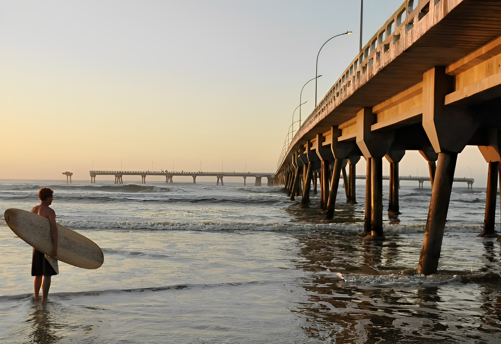

A Plataforma de Pesca de Mongaguá é uma das maiores estruturas de pesca do Brasil, localizada na cidade de Mongaguá, no estado de São Paulo. A plataforma possui mais de 400 metros de extensão e está situada em alto mar, o que oferece aos pescadores uma grande variedade de peixes. Além da pesca, a plataforma também é um ponto turístico popular, atraindo visitantes interessados em admirar a vista do mar e do litoral paulista. A plataforma é uma importante fonte de renda para a cidade de Mongaguá, tanto pela pesca quanto pelo turismo.
 © Pedro Henrique - 2023